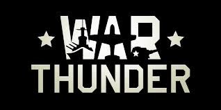
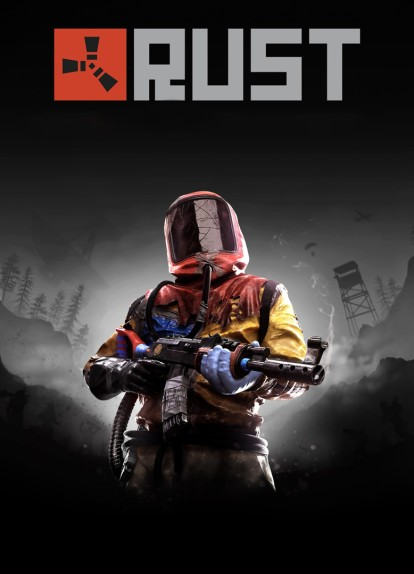
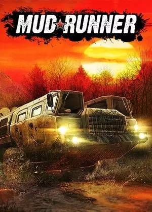
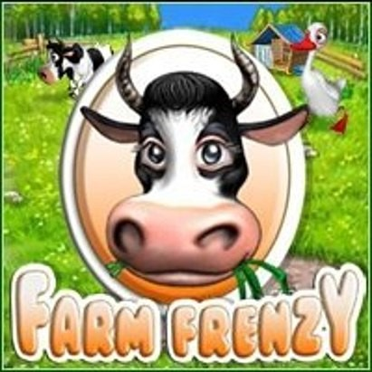

War Thunder — масова багатокористувальницька онлайн-гра. Присвячена бойовій техніці 20-21 Століття . Проєкт розробляється і видається російською компанією Gaijin Entertainment. Станом на 1 травня 2013 проєкт знаходився у стадії відкритого бета-тесту. Користувачеві пропонується взяти участь в боях на багатьох ігрових мапах. Приділено велику кількість техніки.

Rust — це багатокористувацька відеогра в жанрі симулятор виживання, розроблена Facepunch Studios, яка створила Garry's Mod. Rust був уперше випущений у ранньому доступі в грудні 2013 року, а повний випуск отримав у лютому 2018 року. Rust доступний у Windows і macOS. Консольні версії для PlayStation 4 і Xbox One, розроблені спільно з Double Eleven, були випущені в травні 2021 року. Спочатку Rust був створений як клон DayZ, популярного мода для ARMA 2, з елементами крафта, схожими на елементи Minecraft.

Terraria (укр. Террарія) — інді-відеогра розроблена студією Re-Logic. Сенс гри полягає у дослідженні світу, виготовленні предметів, будівництві та битві з чудернацькими істотами (зокрема й босами) у випадково створеному 2D-світі. Гра вийшла 16 травня 2011 року. За оцінками, було продано близько 50 000 копій в перший день випуску, і одночасно понад 17 000 гравців були онлайн першого дня. За тиждень було продано 200 000 копій гри, що робить її найбільш проданою грою за тиждень у Steam, таким чином Terraria випередила The Witcher 2 та Portal 2. 22 лютого 2012 студія Re-Logic опублікувала новину про закриття проєкту й початок активної роботи над новим. У 2013 році Terraria вийшла у PlayStation Network та Xbox Live Arcade з ексклюзивним вмістом. Згодом, розробка відеогри була поновлена.

MudRunner (раніше відома як Spintires: MudRunner) — відеогра у жанрі транспортного симулятора, розроблена компанією Saber Interactive й видана Focus Entertainment. Гра вийшла 31 жовтня 2017 року для Windows, PlayStation 4 та Xbox One та є спінофом ексклюзивної для Windows Spintires 2014 року, яку розробила Oovee Game Studios. Як і в Spintires, у MudRunner гравець керує позашляховиками, долаючи різні локації та виконуючи різноманітні завдання.

«Весела ферма (Farm Frenzy) - казуальна комп'ютерна гра в жанрі time management , розроблена компанією Melesta у 2007 році.Задум гри полягає в розвитці ферми, за допомогою різних засобів, однак ваш розвиток не буде простим, через надокучливих ведмедів.